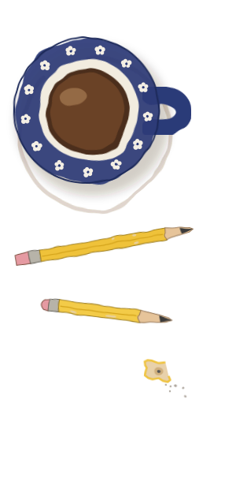

записки · рассказы
Записки и рассказы, вне романа
записки с Ветром · октябрь 2026
Разговоры с Ветром 🌬️ →
своя ветка реальности и душа, подстеленная под эго
заметка · ноябрь 2026
Палата 27 🌙 →
безразличие, достоинство и одна ночь
прочитать рассказ
The Fur Hat (на английском) →
советское детство, одна норковая шапка и семейный суд, который собирался за завтраком. рассказ, который помог мне получить стипендию

если откликнулось, оставь сердечко 🤍
можно нажимать сколько хочется
спасибо, записка у меня 🤍